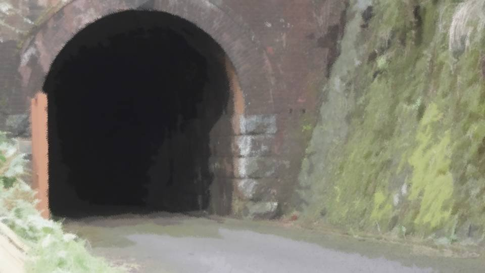

Script 00001D2A

「はい、はい、そうなんです。タイヤがパンクしてしまって。
電灯もないトンネルなんでタイヤ交換ができないんですよ。
ですから応援をこちらに。
まだお客さんも乗せたままでして――」
「ママ、大丈夫？」
「うん、まだ何とか……」
「10分以上経つし、もう降りた方がいいよ」
「はあ……はあ……。 そう……しようか……」
「うん、まだ何とか……」
「10分以上経つし、もう降りた方がいいよ」
「はあ……はあ……。 そう……しようか……」
「運転手さんすみません、ちょっとママの体調が悪いのでここで降ります」
「え？ ああ、本当にすみません……。 お代は結構ですので……。またよろしくお願いします」
「え？ ああ、本当にすみません……。 お代は結構ですので……。またよろしくお願いします」
「さあママ、歩ける？」
「はあ……はあ……。うん……」
「ほら、肩に腕回して。 これからは車でトンネルも気をつけないとね。 暗いトンネルに、狭い車内だし」
「はあ……はあ……。うん……」
「ほら、肩に腕回して。 これからは車でトンネルも気をつけないとね。 暗いトンネルに、狭い車内だし」